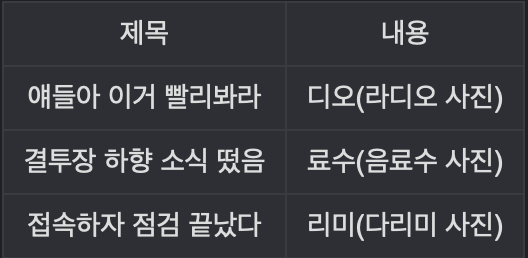
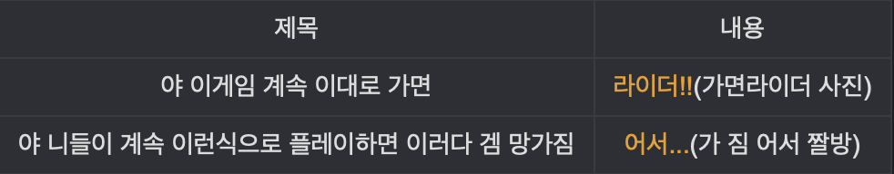

람쥐썬더라는 이름은 2007년 경 던전 앤 파이터 갤러리에서 처음 사용되기 시작한 밈이다.자체적으로 특별한 뜻을 가진 말은 아니며, 제목낚시의 일종에 속한다고 볼 수 있다. 람쥐썬더 이미지로 사용되는 "번개 초능력을 쓰는 다람쥐"는 사실 해외에서는 줄곧 쓰던 밈이었으므로, 이미지와 개념은 해외 커뮤니티가 앞선다. 한국에서 제목낚시로 사용된 관습에 대해서는 다음과 같은 예시를 살펴보면 된다.
당시 갤러리에서는 위와 같은 식으로 제목낚시가 크게 유행한 적이 있는데, 정도가 심해짐에 따라 재미없으니까 그만하라는 의견도 점점 많아지기 시작했다. 그러다가 어느 순간부터 다람쥐에 번개를 합성한 해외짤을 이용해 ~다/람쥐썬더!!! 라는 뜬금없는 제목낚시가 시작되었다. 전혀 상관없는 두 가지를 조합한 의외성 덕분에 재미없어하던 쪽마저 '이건 웃겼다' 라는 반응을 보였으며, 이후 널리 알려지면서 제목낚시를 대표하는 밈으로 자리잡게 되었다.
람쥐썬더가 유행하자 여러 낚시들이 생겨났는데,

등등의 변형 버전이 생겨났다.